Free to forkNo licence and no copyright claim: build this game under your own name, or lift one idea from it. Why?
Game overview
You are one ordinary, versatile person in an endless, living universe, drawn as one continuous 2D side-view world. You walk on planets whose surfaces wrap all the way round, dig into them and build on them. You drive a rover up a ramp into a dropship, walk to its cockpit, fly it into orbit and dock in your carrier's hangar. Then you climb out, go to the bridge and take the carrier to another star.
Nothing on the way is a level, a room or a loading door. Everything near you is simulated, and everything far away is kept as data that catches up when you return, so the places you leave are overgrown, rebuilt or ruined when you come back. Every object is made of materials, and nothing is ever created from nothing.
The universe tends toward calm. Danger exists, but it rarely comes looking for you, and every session you choose whether to garden a valley, chart a nebula, help a colony through a crisis or go to war on a frontier. When your whole household is lost, you're reborn somewhere else, years later, and the universe remembers what you did.
This is Reactorcore's oldest and largest design, first drafted in 2011 as Planet Warfare. It carries the physics and data-driven content of Cortex Command and Soldat, the dig-and-build worlds of Terraria, Minecraft and Starbound, and the fantasy of anime like Mobile Suit Gundam: a crew aboard a mothership, travelling from place to place and fighting on land, sea, air and space. It doesn't copy any of them; it asks what would let all of that happen without a script.
Target audience
People who finish a Gundam series, a Star Wars film or a season of Cowboy Bebop and wish they could just go and live there: crew a ship, see the megastructures, make friends, have their own adventures.
Sandbox players whose worlds ran out of reasons. Terraria, Starbound and Minecraft give them the hands and the tools, then nothing to do with a finished base but tear it down. They're also tired of mountains that turn out to be painted backdrops.
The surface is simple: WASD, the mouse, one inventory key and one interact key. All the depth comes from context: what you wear, hold and operate.
Game's purpose
Freedom and choice: go anywhere, be anyone, do anything in any order, with nothing fenced off by an invisible wall.
Growth, variety and understanding: a universe that keeps generating places, people and situations nobody scripted, all following rules you can learn.
Meaning and identity: stories that are truly your own, in a universe that remembers them after you're gone.
It deliberately avoids draining rest (every session can end at a safe point, and the universe's clock only runs while you play), safety (nothing dangerous comes unprovoked) and respect for your time (no grind, not even after a rebirth).
Core concept
Open-world games usually build a fixed stage: a painted horizon, scripted events and invisible walls to keep you on the path. Sandboxes give real freedom, then run out of reasons to use it, and infinite worlds bloat the save until players delete their own chunks.
This one builds the forces instead of the stage: materials, gravity, people with needs, and a universe that keeps living in the background. Things happen because the world is the way it is.
Above that sit a calling you choose, which never runs out, and situations generated from the real state of the world, each one finished in an evening or a few.
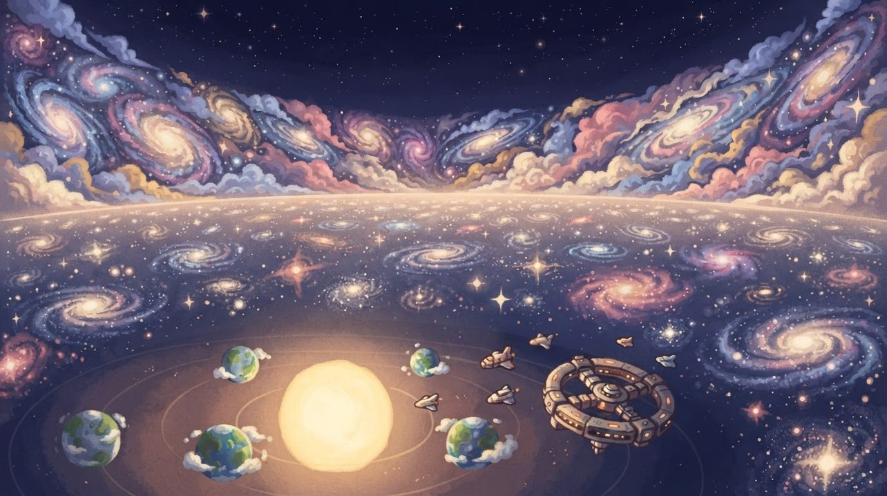
"The universe was never created and will never end. It only changes form, and it remembers."The universe, in short
Lore & story
A universe with an edge
The universe has no beginning and no end: no first big bang, no heat death. It's vast but finite, a calm, settled middle of superclusters, galaxies and voids, surrounded by the Wilderness, an edge that curves up like the rim of a bowl. Whatever drifts over the rim is reshuffled, combined, purified or corrupted, and sooner or later pushed back in.
Matter is never created or destroyed, only changed. Everything settles toward stillness over time, while weather, life, stars and accidents keep shaking it up again. And when too much happens in one place at once, the universe defends itself with a storm of space-time that thins the crowd. Its scientists call it the Chaos System.
The age of exploration
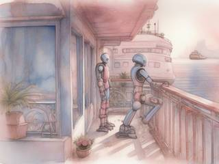
The game is set in the AAL universe, in the era called the Exploration of the Universe. The space monster wars are over. Humanity, long since become Homo mugen, has spread beyond the Milky Way with its alien friends and its machines, into a soft utopia where people live as long as they like and do what they love.
Most of the settled universe is at peace. The frontier isn't: remnant space monsters, rogue machines, anomalies, dimensional fallout from the superweapons of earlier wars, and groups who refused the galactic community and hold their own corners of space. And far out, at the edges of the map, the Wilderness is coming into view.
Every earlier AAL story happened in this universe's past. Its wrecks, ruins, relics and old superweapon sites are still out there to find.
Who you are
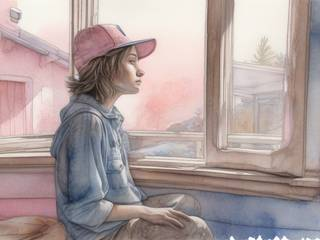
Someone's grown-up child, somewhere. The universe is already alive when you arrive, full of stars, planets, cities, ruins, fleets, monsters and friendly strangers, and you wake up in it with a family, a home and a backstory of your own. Maybe there's a spaceport down the road. Maybe your people still work with stone tools.
Thanks to digital immortality, death is usually a setback: you're restored at your household's sanctuary. Only if every one of you is lost does your soul return to the astral realm, to be born again elsewhere, years later.
The goal right now
Whatever you choose. You can stay and make your corner of the universe beautiful, or leave your family behind and found a crew of your own. You can seek out what threatens the universe and stop it, or travel toward the edge just to see it. The universe offers plenty of reasons, and it doesn't insist on any of them.
Controls & interface
You control one person directly, the way you would in a platformer or a shooter. Their two hands with opposable thumbs are the whole interface: anything they can hold, wear, enter or operate changes what they can do.
Move
A / D
Walk, or steer whatever you're driving
W
Jump, climb, or thrust up
S
Crouch, descend, or brake
Mouse
Aim; the camera leans the way you look
Hands
Left click
Use what you're holding: dig, build, fire, repair
Right click
Its second function
E
Interact with what's in front of you: enter, drive, open, talk, pick up
Q
Inventory, worn gear and body slots
Household
Tab
Switch to another member of your household in range
F
Orders: follow, guard, work, go there
1–4
Quick items and abilities
Views
Wheel
Zoom from 600% close-up out to 50%
M
Sensor view: what your ship or binoculars can see
Esc
Pause anywhere; the game saves continuously
That's all there is, and none of it needs more than a console controller. Abilities come from equipment: magnetic boots let you walk on a hull, a jetpack lets you fly in zero gravity, scuba gear lets you dive, climbing hooks let you cling to a cliff, and a sealed suit lets you step into vacuum, heat or radiation. Climb into a rover and the same keys drive it; sit at a carrier's helm and they fly it.
"Down" is wherever your floor is. On a planet that's toward its core; inside a ship it's the deck under your feet, even while the ship rolls. The camera turns with it, so the floor is always the bottom of the screen. Further views are devices in the world: binoculars, a ship's sensors, a station's star map. Better sensors see further and in more spectra (heat, radiation, pressure), and leaving a view is instant.
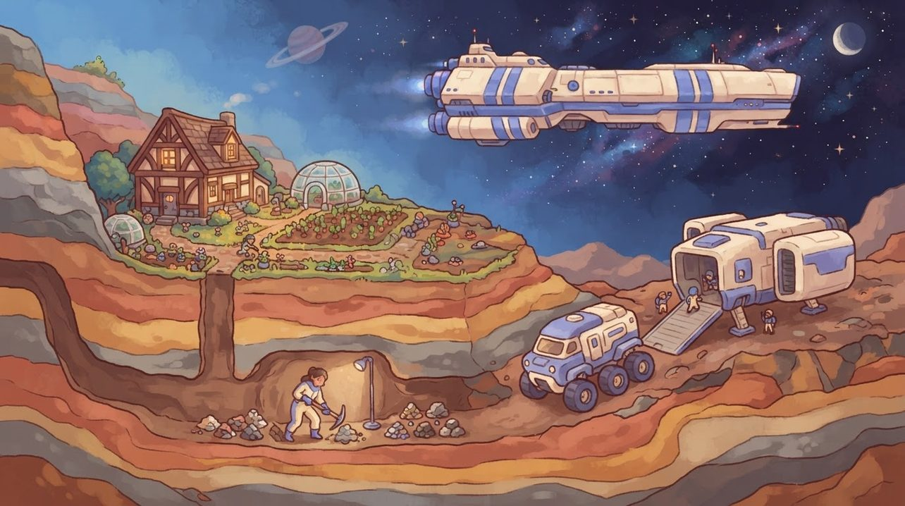
"From the tunnel under your house to the carrier in orbit, it's one continuous world. Nothing in between is a loading screen."
From the ground to the stars
The heart of the fantasy is a journey with no cuts in it. Here's one, from a hole in the ground to another star system, and every step of it is played:
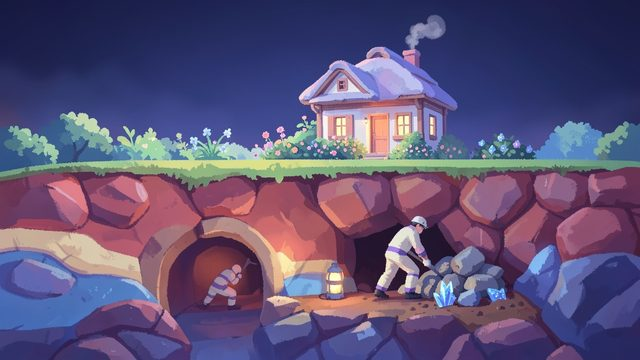
1 · DigEvery tile of ground is a quantity of one material. Dig it out and you're carrying a pile of stone, soil or crystal you can store, sell or build with.
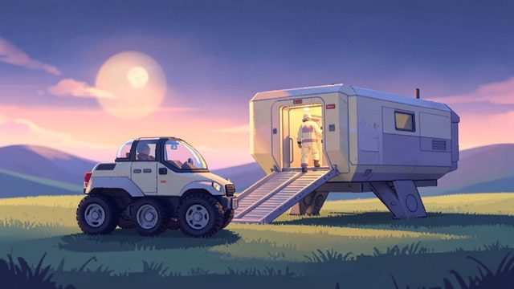
2 · DriveLoad the haul into the rover, drive it up the ramp into your dropship, park it and walk forward to the cockpit.
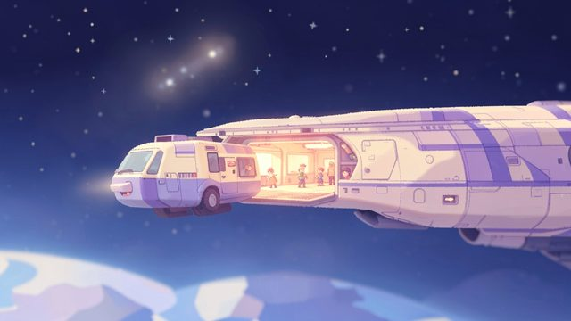
3 · FlyLift off through the atmosphere, out of the gravity well, and into the open hangar of your carrier. The dropship, with the rover inside it, now travels with the carrier.
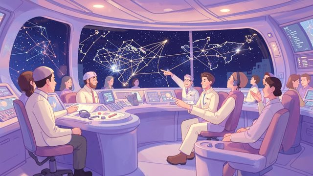
4 · JumpWalk up to the bridge and plot a jump. FTL travel happens in the ship's sensor view, and something on the way can pull you out of it into a real encounter.
Bodies inside bodies
What makes that possible is one rule: the world is a tree of bodies. A planet is a body. A carrier is a frame inside it, the dropship a frame inside the carrier, and you're inside the dropship. Each has its own coordinates and its own gravity: toward a planet's core, toward a ship's deck, or none at all in open space. Things inside a moving frame are simulated in the frame's own space, so the crew keeps its footing while the carrier accelerates and rolls.
The universeSuperclusters, galaxies and voids, inside the Wilderness rim.
A star systemA pulsing star and around eight celestials.
A celestialA planet, moon or asteroid: a disc you can walk around.
A large frameYour carrier, a station or an arcology, with its own gravity.
A small frameThe dropship parked in its hangar.
YouStanding in the cockpit, on the dropship's floor.
How fast, how far
The universe is compressed: still huge, but scaled so that a journey fits an evening. Each speed has its own way of seeing:
Speed
Where
How you see it
How long it takes
On foot
Surfaces and interiors
Close up, zoom 600% to 50%
Hours to walk around a planet
Ground and air
Surfaces and atmosphere
Zoomed out, the live area stretching ahead of you
Tens of minutes around a planet by rover, a few by aircraft
Orbit and sublight
Between the celestials of one system
Epic scale, then the far view
2 to 10 minutes across a system
FTL
Between star systems
The ship's sensor view
30 to 90 seconds to a neighbouring star
Deep FTL
Between galaxies, toward the Wilderness
The sensor view, with better drives
An expedition of many jumps
FTL slows to a crawl near big masses and is useless below a moon's high orbit, as it does throughout the AAL universe. So every landing and every launch is flown for real, through the atmosphere, never skipped by a cutscene.
Everything from a bike to a battle station
Vehicles, buildings and stations are the same thing in different sizes: a frame, a grid of tiles with its own gravity, a hull and the modules placed inside it. Anchor one to the ground and it's a building. Leave it free and it's a vehicle. Undo the anchors and your base lifts off as a mothership.
Size
Length
Examples
Inside
Object
Up to 3 m
Tools, crates, bikes, turrets
One sprite each
Small frame
3–20 m
Rovers, mechs, fighters, dropships, houses
A cockpit or a few rooms
Medium frame
20–200 m
Gunships, freighters, bunkers, towers
Fully walkable
Large frame
200 m–2 km
Carriers, stations, arcologies
Walkable decks and hangars for smaller frames
Megastructure
Over 2 km
Ring stations, planet fortresses, pieces of a Dyson swarm
Built like a celestial; walkable in parts
Game layers
Four layers. The moment-to-moment life is the fun; the layers above it give it direction, and none of them ever has to end.
01 · Moment-to-moment
A body in a physical world
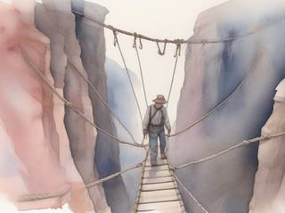
Side-view action where everything is made of something. You walk, climb, dig, carry, build, repair, drive, fly and, when it comes to that, fight, all with the same two hands.
Problems are physical and so are their answers. A crossing too wide to jump wants a bridge, a jetpack or a vehicle. A cave too hot to enter wants a heat suit. A load too heavy to carry wants a rover, and a rover too slow wants a dropship. Every piece of gear opens a new way through.
02 · Low metagame
Situations
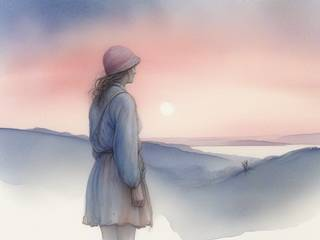
Finite goals with a clear start and a clear end, generated from the real state of the world, never scripted: a better place to settle, a monster nest that will grow if left alone, materials your settlement lacks, a stranger who needs help, a cave with traces of an old civilization, a storm on its way.
They reach you the way news does: through your sensors, your comms, the people you meet, and the situation board in your sanctuary. One situation often leads to the next. Reaching the ideal spot becomes building a settlement, which becomes finding materials, which becomes working out how to haul them home.
03 · High metagame
A calling, a home and a history
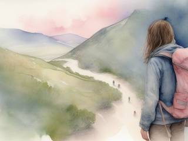
The goal that never runs out is a calling you choose: guard the universe, garden it, find its edge, raise a civilization, or simply live. It changes which situations come to your attention, never what you're allowed to do.
Your sanctuary is the persistent home your household returns to, wherever you decide it is: a farmhouse, a city block or a carrier. And the Chronicle keeps the history of everything you've done, through every life you've lived.
04 · Practical game flow
One evening, start to finish
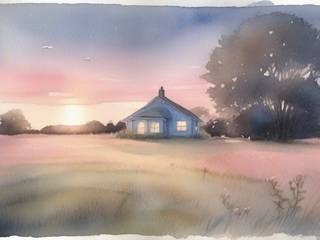
Boot up and see a few clearly highlighted routes: situations near you and situations that fit your calling. Pick one, or ignore them all and go fishing. Play until you've had your fill.
The game saves continuously, and every session can end at a safe point you choose. The universe's clock only runs while you play: it ages the places you've left in game time, never behind your back in real life. Nothing nags you to come back, and nothing is lost if you take a month off.
Game modes
There's one universe and one game. What changes is how many people you live it as: the design started with two modes and folds them into one model, the household. Playing solo is simply a household of one.
Way to live
What you control
When someone dies
Alone
Yourself. Companions can travel and fight beside you on their own.
You're restored at your sanctuary. If it has fallen, you're reborn elsewhere after a time skip, to finish what you started.
Household
You plus up to eight members: family, crew, partners. Switch to any of them at any time; the others follow simple orders and live their own lives.
Play passes straight to another member, with no time skip. Only when every one of them is gone are you reborn, after a longer, harsher skip.
It's a single-player game at heart. A universe where a player can level a city or crash a planet into a sun can't be shared with strangers without becoming a griefing nightmare. What can be shared is everything else: blueprints, photos of your worlds, the stories of your lives.
Callings & situations
A sandbox without a reason ends the same way every time: the player builds something wonderful, runs out of things to do with it, and starts blowing it up. The design answers that with two kinds of goal working together. The calling is the infinite one: a role that's never finished, because the universe never stops needing it. Situations are the finite ones, and there's always another.
Calling
The infinite goal
The situations it brings to your attention
Guardian
Seek out what threatens the universe and stop it
Growing nests, warlord borders, derelict reactors, calamities in the making
Gardener
Cultivate places into well-kept, beautiful worlds
Barren valleys, poisoned rivers, ruins worth restoring, settlements that need a hand
Pathfinder
Reach the edge of the universe and understand it
Anomalies on the horizon, uncharted nebulae, places nobody can reach yet
Founder
Raise your household into a civilization that can take on anything
Better sites to settle, materials to secure, factories and shipyards to build
Free spirit
None. Just live.
Whatever happens to be nearby
You can hold several callings, or change them whenever you like. A calling only decides what gets highlighted; every situation stays open to everyone.
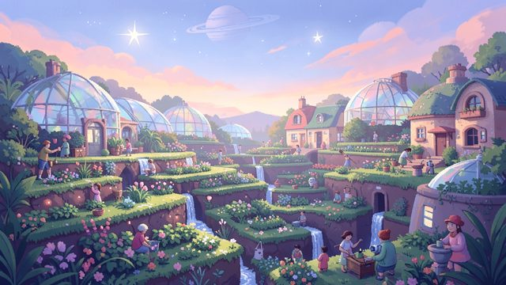
GardenerA barren valley, a few seasons of work, and a place worth coming home to.
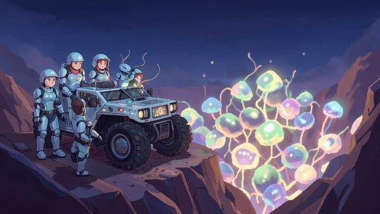
GuardianA nest that will keep growing unless someone deals with it. It won't come to you; you decide when to go.
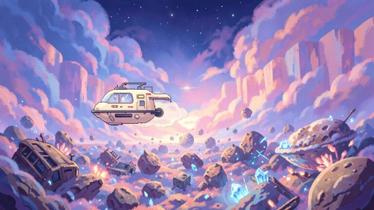
PathfinderNear the Wilderness, matter comes back reshuffled: half-planets fused with crystal and wrecks grown into rock.
Features & mechanics: the universe engine
A universe that runs without a script needs its laws in place before any content. These are the laws.
Foundations
Laws before content
Most games build their content first and patch the rules around it. Here nothing is made until the thing it stands on exists. A gun depends on who carries it and where; that person depends on the environment; the environment on the universe's natural laws; and all of it on what the computer can actually run. Each link depends on everything to its left:
The computerHow many bodies, fluids and minds can live at once
The premiseOne continuous universe, played as a person
Natural lawsMaterials, gravity, energy, the Chaos System
So there's one kind of fire, one kind of water and one kind of radiation in the whole universe, and everything treats them the same. Energy comes in four forms: solid (projectiles, beams, bolts), area (heat, gas and liquid spreading tile to tile), fall-off (blasts and exhausts that weaken with distance) and being (creatures made of gas, slime or plasma). Any new item, from any author, behaves correctly in every place it can ever end up.
The heart of it
Vehicles inside vehicles, all the way up
A frame is a tile grid with its own gravity, a hull and modules: a cockpit or bridge, engines and thrusters, a reactor, a gravity generator, turrets, hangars, cargo holds, crew quarters, a med bay, a lab, a workshop, airlocks, doors and elevators. Every module needs supplies through real connections: power, fuel, crew. A bigger ship can do more and has more to keep running.
Fly into a bigger frame's hangar and you become part of it, carried wherever it goes. The reverse holds too: destroy a carrier and everything inside is in trouble. From the outside you see a frame's hull; step inside and the hull fades away to show its interior, which outsiders can't see into.
Damage is physical: hull tiles break off, a module stops working when its tiles are destroyed, and boarders come in through breaches, airlocks or a hangar door someone left open.
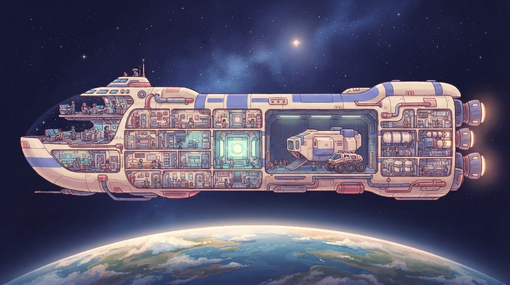
"The carrier carries the dropship, the dropship carries the rover, and everyone aboard keeps their own floor."
Celestials
Planets you can walk all the way around
In side view, a planet is a cross-section disc. Its surface is a ring you can walk, drive or fly around without ever reaching an edge, and below it lie the strata: surface, crust, mantle and core, all pointing "down" to the centre. The disc is cut into wedge-shaped sectors that stream in as you approach.
Around it, a ring of atmosphere cells trades air with its neighbours, and that exchange is the wind. Above the air is orbit, where gravity still pulls but nothing breathes. Gas giants and stars have no surface at all; diving their layers takes a special vehicle.
Celestials don't orbit or spin. Stars pulse between a bright, hot phase and a dim, cool one, which gives every world in reach its day and night: sometimes two-minute days, sometimes month-long ones. Planets stay where they are, so you can always find them, dock with them and come home.
Matter
Everything is made of something
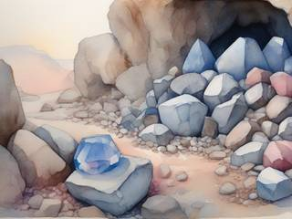
Close up, terrain is a grid of half-metre tiles, each holding one material. Digging turns tiles into piles you carry, store or feed to machines; building consumes them again. Equivalent exchange is just counting: nothing appears from nowhere, and nothing vanishes into nowhere.
Materials come in a handful of groups (light and heavy metals, rock and minerals, hard and soft organics, ice and water, volatile and inert chemicals, and exotics from dead stars and the Wilderness), each with a density, toughness, conductivity, heat tolerance and flammability. An object's mass, strength and cost follow from its shape and materials. Build a ten-metre boulder out of cardboard and it'll be light, flammable and fragile, and a one-metre fall will crush it.
Loose rubble settles into clumps that slowly fuse back into the terrain, so debris never piles up forever. And a truly huge blast doesn't simulate every grain: it removes whole blocks and turns them into totals of rubble and dust. Nothing is lost, only counted more broadly.
Making things
Materials, a workshop and know-how
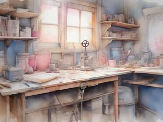
Making anything takes three things: materials, a place to make it (a workbench, a fabricator, a shipyard) and the knowledge of how. Time, too, which a better workshop shortens. Even terrain, planets and stars can be made, given enough of all three.
Knowledge comes from experiments, as in Eco: run enough of them in a lab and you have a blueprint. Blueprints are things in the world. They can be copied, traded, given away or shared, and lost if every copy is destroyed, which is why libraries and vaults matter.
There are no experience levels. What you can do comes from what you know, what you own and what you can build. Machines need their inputs (power, fuel, ammunition, food) through connections that fit: sockets, pipes, wires, conveyors. No electricity through a wooden pipe, no lava through a copper wire.
The simulation
A live bubble and a ledger
A whole universe can't run at full detail on one computer, and it doesn't need to. Detail follows distance from you, in three tiers:
Tier
Reach
What runs there
Live
About a kilometre around you, and around the frame you're in
Everything: physics, tiles, fluids, every mind, combat
Near
1 to 10 km
Coarse movement and simplified minds; ships and people as moving tokens
Ledger
Everything else
Data only: factions, populations, settlements, fleets, celestials, updated by a background sweep every few minutes
The save keeps only what changed. Any untouched place can be regenerated exactly from its seed, so the save holds the tiles you dug and built, the frames you own, the places you named and the people who matter. That's how a whole universe fits on an ordinary hard drive, and why it's built as a finite universe in a bowl rather than an infinite world that eats the disk.
When a place leaves the ledger, it first gets the time that has passed and the events that touched it: overgrowth, decay, flooding, a settlement rebuilt, a base taken over. Leave a fire burning beside a flower bed and the spot is scorched and warm when you return.
A law of nature
The Chaos System
Most games hide their performance tricks, or shrug them off with "it's only a game". Here the universe's anti-lag system is a visible law of nature, with a budget for every live area: objects, active bodies, minds, fluid cells, particles and mechanisms. Its response grows with the strain:
CalmEverything runs, with room to spare
QuietRubble merges, distant bodies sleep, minds think a little slower
VisibleSpace shimmers; clutter folds into clumps or falls into rifts
SevereLocal storms carry the excess away to the Wilderness
The line it never lets anything cross is lag. Because the response is diegetic and predictable, players read it like weather: crowded places feel stormy, so people learn to build sensibly. And nothing it takes is deleted; it goes to the Wilderness, and may come back one day. The same system checks modded content when the game starts, so a mod that blows past the part limits gets a warning and a higher place in the culling queue.
Seeing ahead
The far view
Side view has an old problem: going fast, you can't see what's ahead. Here the background is the answer. It's a live far view, like a forward camera: distant bodies appear as faint dots in the centre of the screen, grow and gain colour as you approach, and drift toward the edge they'll arrive from, so you can see what's coming above, below, ahead and behind.
What appears is chosen by size and brightness against distance, within your sector and its neighbours. Underground, the dark mass of the rock around you replaces the horizon. And things can cross between the background and the play layer: a missile arcs off into the distance and comes back down somewhere else.
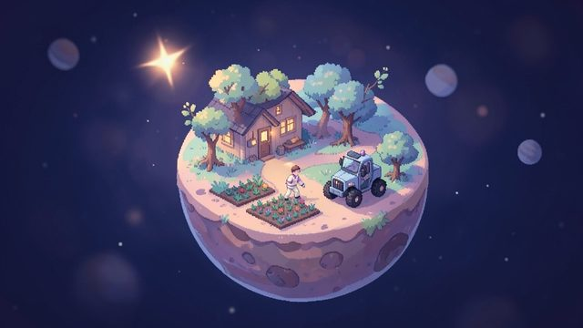
Small worldsAn asteroid is a kilometre or so around: small enough to walk around before lunch, big enough to live on.
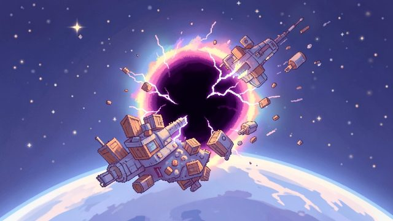
Too much in one placePile up enough wreckage and the universe folds it away into a rift. Somewhere near the edge, it will turn up again.
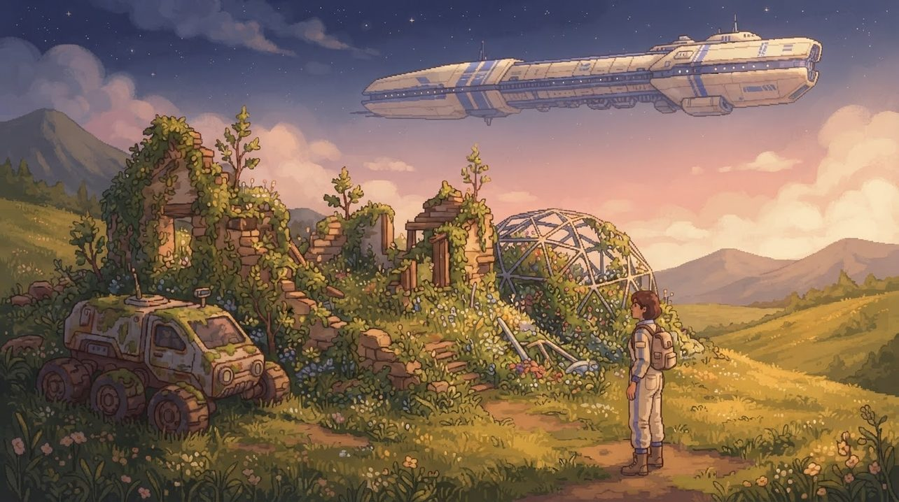
"Places you leave keep living without you. Come back after a lifetime and the forest may own the house."
Features & mechanics: life in the universe
The laws make the universe possible. These are what make it a place to live.
Death and rebirth
A household, a sanctuary and another life
Your household lives around a sanctuary: a settlement, a building or a ship with a revival facility. While anyone in the household lives, a death is a setback. The fallen member is restored at the sanctuary after a while, and you carry on as someone else straight away.
If everyone is lost, or the sanctuary falls with nobody left to restore you, your soul returns to the astral realm and you're reborn elsewhere into a new family, after a long time skip. Your old sanctuary becomes ruins, for strangers or for you to find. Time never rewinds: what happened, happened.
And there's no grind on the other side. Your new family's circumstances decide your start. If there's a military spaceport nearby, you can talk, sneak or fight your way onto a ship that same evening. If all your people have is stone tools, you'll build up from there. Everything you knew is still out there to reclaim, and you can change your look and name any time, so you never have to restart a universe to feel new.
Cozy or intense, your call
Nothing comes unprovoked
The universe follows one rule: nothing bad comes to you unless you provoke it or go where it lives. Natural cycles are real (star flares, quakes, storms, floods), but each is telegraphed with warning signs, so living somewhere is a choice, not a trap.
Poke something dangerous, like a monster nest, a derelict reactor or a warlord's border, and you may start a calamity: a crisis that spreads over an area and leaves a lasting change unless someone stops it. Calamities can chain into one another, but they never end the universe. At worst, you move.
Disasters scale with what you've built. A small household is threatened by small things; a great civilization is stable, but big enough to attract bigger trouble. A quiet evening of gardening stays quiet unless you decide otherwise.
People with needs
Minds that say please and thank you
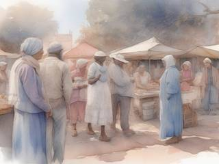
Everyone in the universe acts to meet their needs, as Nonviolent Communication describes them: subsistence, safety, freedom, growth, fun, meaning, respect and care. Each need is a number. A person picks the most urgent and tries one of their kind's usual ways to meet it: eat at home, go to work, flee danger, seek company.
Their feelings show in emotes and speech bubbles, phrased as requests and thanks, so you can always tell why someone acts the way they do. They remember people and places as safe, dangerous or unknown, and they forget over time. They share memories by talking, so word of what you did travels ahead of you.
They think every half-second or so, slower when the Chaos System is busy, because they're awestruck. They go dormant in their homes and wake up when needed. Above them, factions (colony governments, companies, research groups, guilds, nomad fleets, and on the frontier, outcasts and warlord remnants) live mostly in the ledger, and their attitude toward you changes region by region with what you do.
The edge
The Wilderness gives things back
There are no invisible walls, not even at the end of the universe. Its edge is the Wilderness, a place you can actually travel to: rising, stormy, and stranger the further you go. It takes in whatever drifts or is thrown over the rim and sends it back reshuffled: combined, purified or corrupted. Throw bad things in, and bad things come back out.
Generic matter is broken down and returned as raw material. Unique things are kept in a pool, so the ship you lost to a chaos storm or a bad jump may drift home one day, changed. Understanding the edge, and learning to live with it, is the work of the Pathfinder calling and of the eras that follow.
A universe that remembers
Names, the Chronicle and déjà vu
Most of the universe has no names until someone gives them. You name what you find and claim: planets, systems, settlements, ships. The names stay.
The Chronicle is the universe's history of your lives: the places you named, the calamities you stopped or started, the households you lost and the ones that came after. It's readable in your sanctuary. It celebrates and mourns with you, and it never pays out. It's also why returning somewhere feels like déjà vu: a valley you terraced three lives ago, wild again; a city you helped found, grown huge; a border you held, now somebody else's.
Abandoned places rust and overgrow. Conquered ones belong to whoever took them, with their own rules. Some are wastelands. Some are better than you left them.
Content that multiplies
Standards that let anyone add to it
The whole universe is data, built from generic templates that a generator gives context, so it was meant for modding from the first page. The rule that keeps it consistent: an author sets an object's size, shape and materials, never its weight or hit points. Those follow from the materials, like everything else. Nobody can sneak in a three-kilogram bullet or an indestructible paper wall.
Because every item stands on the same laws, every new item works with everything already there: a new tool works in every hand, a new module in every frame, a new material in every recipe. Generation works the same way: places aren't drawn from a list of biome templates but grown from their conditions (humidity, materials, temperature, life, hazards, weather, soil), so mixed and entirely new biomes appear without anyone designing them, plus the odd wildcard: a mountain with a hole punched clean through it by a meteor from a distant nova.
Content that meets the standards can load on its own; anything else is the player's choice. On consoles, where modding tools don't exist, authors could apply to have their best work bought outright and shipped in official updates.
Trivia
It started as a war game
In 2011 this was Planet Warfare: "an epic war game expanding through galaxies", two games in one. A side-view squad shooter with bunkers, very like Cortex Command, fought on the planets; top-down ship battles like Battleships Forever were fought in space; and a turn-based overview of the solar system, close to the board game Risk, tied them together. You were "the consensus of your faction", and your population was your lives: about a hundred people, replaced slowly by cloning, and when the last one died, you lost.
Over a decade of notebooks (two waves of design pages and a third notebook on the universe engine), the war became one situation among many and the fronts became one seamless universe. In 2026 Reactorcore renamed it, because the old name was "too war focused" for what it had become.
An art system came out of it
A game that has to draw "a pie, a person and a planet" needs a standard for all three, so the project spun off Reactorcore's Pixel Sprites ala Reactorcore (PSRC) system: hand-drawn sprites at one universal scale (32 pixels to the metre) for anything up to three metres, and the 3M system of primitive shapes with tiled pixel textures for everything bigger, because "pixel art is unsustainable for objects beyond 3 meter size".
Its children came first
The seamless universe was always the hardest part, so its ideas were split into simpler designs that each deliver part of the same promise: RoomSpace keeps the universe but builds it from rooms; TopVerse goes top-down, with subgames on a region map; and AAL Bunkerships brought back the side-view Cortex Command core without the universe. This is the one they all came from.
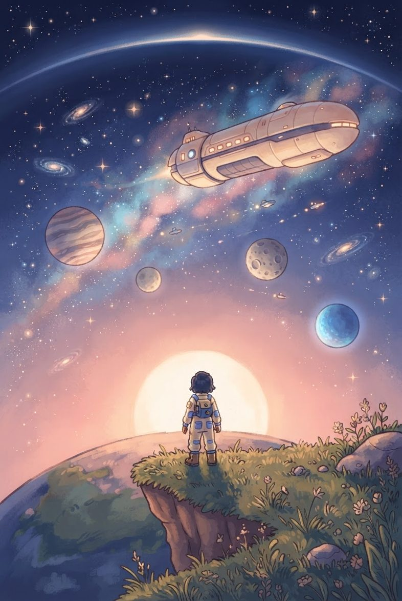
Welcome to your life
AAL Universe: Perpetual Boundless Freedom
You open your eyes on a world you've never seen, as someone's grown-up child. Your family has a house, a rover and opinions. Past the moon, a carrier is looking for a crew. Beyond the galaxy, the edge of everything is coming into view.
Dig, build, drive and fly, with no walls and no loading doors between the tunnel under your house and the stars. Go where nobody has been, or stay and make one valley beautiful. The universe keeps living while you do, and it remembers what you did, even after you're gone.